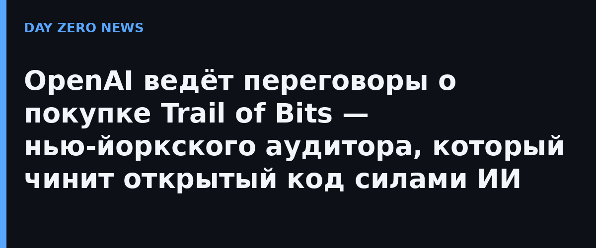

The Information сообщает со ссылкой на осведомлённых источников, что OpenAI ведёт предварительные переговоры о покупке исследовательской компании в области безопасности Trail of Bits. Переговоры идут, но до финальной сделки далеко: финансовая структура и возможная цена не раскрываются, и обе компании отказались публично подтверждать само обсуждение. То есть отдельного официального анонса нет — на текущий момент это утечка от источников, а не объявленная сделка.
Компания базируется в Нью-Йорке и годами специализируется на исследовании уязвимостей, аудите кода и adversarial-тестировании — включая софт и блокчейн-системы. Это один из заметных независимых аудиторов: именно такие команды ищут дыры в критичной инфраструктуре, пока их не нашли преступники. Показательно, что репорт подаёт покупку как шаг к наращиванию собственного бизнеса OpenAI в кибербезопасности, а не как покупку «тихой лаборатории».
Летом 2026 года OpenAI и Trail of Bits вместе представили проект Patch the Planet в рамках инициативы Daybreak: ИИ-обнаружение уязвимостей в популярном открытом ПО в связке с ручной экспертизой, чтобы находить слабые места и выпускать патчи для мейнтейнеров по всем отраслям. Trail of Bits к тому же уже встроила безопасностные модели OpenAI в свои процессы исправления — от поиска дефектов до ускорения ревью патчей. Так что потенциальная покупка — не знакомство с нуля, а узаконивание сложившегося тандема.
Чем глубже большие языковые модели и ИИ-агенты заходят в критичные системы, тем острее вопрос аудита: проверять нужно и сам код, и рантаймы агентов, и промпт-поверхности. Своей практикой безопасности с сильными людьми OpenAI закрывает сразу две потребности — снижает риск репутационных инцидентов вокруг собственных моделей и получает коммерческую услугу, которую смогут покупать другие. Для рынка безопасности это ещё один сигнал: большие ИИ-лаборатории начинают скупать экспертизу в обороне, а не только вычислительные мощности.
Сделки на рынке ИИ-безопасности в 2026 году идут одна за другой, и интерес к аудитору, который специализируется на открытом коде и криптографии, вписывается в общий тренд. Но до подписания бумаг история остаётся разговорной: источники The Information подчёркивают раннюю стадию, поэтому фиксируем факт переговоров без выводов о закрытии сделки.